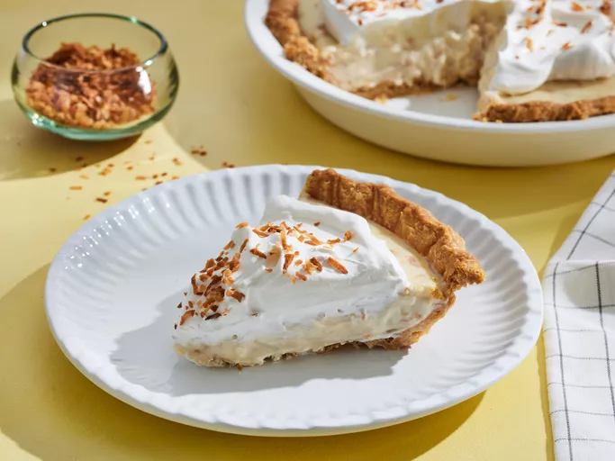

Old-Fashioned Coconut Cream pie

Description
Coconut cream pie is on a another level for me. The coconut cream pie is filled with a silky coconut custard filling, followed by the rich cool deliciousness of whipped cream, topped off with toasted coconut, and last but not least, the crispy pie crust. This pie is heavenly
Ingredients
- 1 cup sweetened flaked coconut
- 3 cups half-and-half
- 3/4 cup white sugar
- 1/2 cup all-purposed flour
- 2 large eggs, beaten
- 1/4 teaspoon salt
- 1 (9in) pie shell, baked
- 1 cup frozen whipped topping, thawed
-
Steps
- Gather all ingredients
- Preheat the oven to 350 degrees F (175 degrees C). Spread coconut on a baking sheet.
- Bake in the preheated oven, stirring occasionally, until golden brown, about 5 minutes.
- Combine half-and-half, sugar, flour, eggs, and salt in a medium pot. Bring to a boil over low heat, stirring constantly, until mixture thickens and coats the back of a wooden spoon, about 15 minutes.
- Remove the pan from the heat and stir in 3/4 cup toasted coconut and vanilla; reserve remaining toasted coconut for garnishing the pie.
- Pour custard into pie shell and chill until firm, about 4 hours.
- Top with whipped topping and reserved toasted coconut.
- Enjoy!!!!